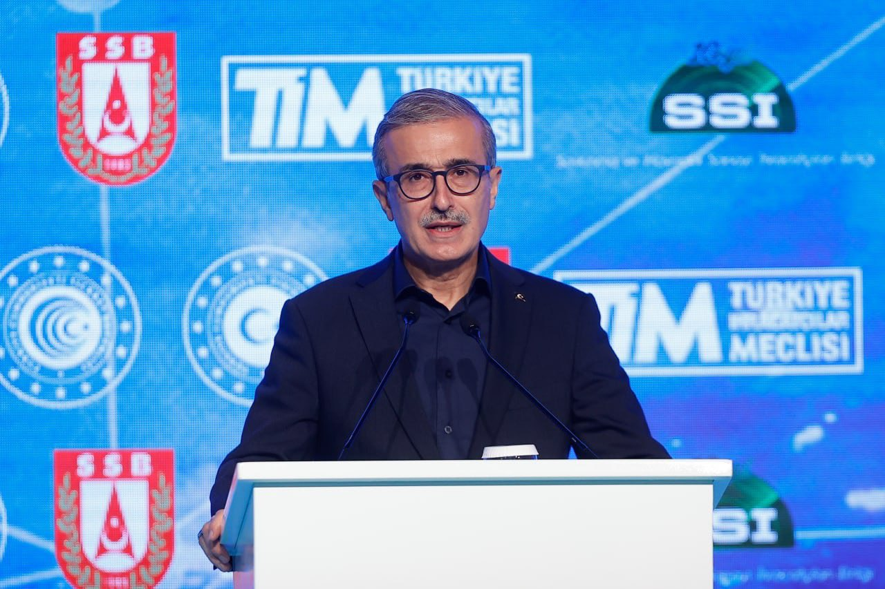

Hulusi Akar: Yerli motorlar üretilmiş olup test faaliyetleri sürmekte
* Millî Savunma Bakanı Hulusi Akar, Millî Savunma Bakanlığı’nın 2022 yılı Bütçe Teklifi’nin görüşüldüğü TBMM Genel Kurulu’nda konuştu. Faaliyetlere ilişkin detaylı bir sunum yapan Bakan Akar, yerli motorların test faaliyetlerinin devam ettiğini bildirdi. MSB Hulusi Akar, konuşmasında konuyla ilgili şu ifadelere yer verdi:
“Silah sistemlerini yakından ilgilendiren motor konusunda da kısa bilgi vermek istiyorum. Sizlerin de yakından takip ettiği üzere, savunma sanayi şirketlerimizin yaptıkları özverili çalışmalar neticesinde; füzeler için turbojet motor ve İnsansız Hava Araçları için yerli motorların seri üretimine başlanmıştır. Taktik tekerlekli zırhlı araçlar, Fırtına Obüsü, ALTAY Tankı, GÖKBEY ve ATAK helikopteri ile AKINCI İnsansız Hava Aracı için de yerli motorlar üretilmiş olup test faaliyetleri sürmektedir. Bunların yanı sıra, Elektrikli Zırhlı Muharebe Aracı Projesi kapsamında, zırhlı M113 aracına hibrit tahrik sistemi entegrasyonu tamamlanmıştır. Sistemin Fırtına Obüsü ve tanklara uygulanmasına yönelik çalışmalar devam etmektedir.T.C. Cumhurbaşkanlığı Savunma Sanayii Başkanı Prof. Dr. İsmail Demir, 6 Eylül Pazartesi 2021’de TRT Haber canlı yayına konuk olarak, savunma sanayii projelerinde gelinen son aşamaları paylaştı. Demir, “Harekât ortamında durdurulamaz olmanız lazım. İletişiminizin kesilemez olması lazım. Hasım hedeflere ulaşmayı noktasal yapabilmeniz lazım. Bunları mümkün her türlü teknolojik çalışmayı yapıyoruz.” dedi.
Yerli motor projeleri ile ilgili değerlendirmelerde bulunan Demir, savunma sanayiinde daha önce 65 projenin bulunduğunu bugün ise 70 milyar doları aşan bütçede, 750’yi aşkın projenin olduğunu söyledi. Demir, Türk Silahlı Kuvvetleri’nin envanterine yeni katılan AKINCI TİHA’nın ise gelişmeye devam edeceğini, çeşitli motor ve mühimmatla donatılacağını söyledi.
Savunma sanayinde motor geliştirmenin uzun bir süreci kapsadığını belirten Demir, “Tank motorumuz şu anda testte çalışıyor. İHA motorlarımız kullanılmaya başlandı. Helikopter motorumuzun ilk prototipleri çıktı. Motor konusunda bir seferberliğimiz var.” diye konuştu.”
ASELSAN’ın kurumsal yönetim notu 9,35’e yükseldi
* Kurumsal Yönetim Derecelendirme yolculuğuna 2012 yılında en iyi ikinci başlangıç notunu alarak başlayan ve notunu her yıl daha da ileriye taşıyan ASELSAN, Sermaye Piyasası Kurulunun kurumsal yönetim ilkeleri baz alınarak bağımsız bir derecelendirme şirketi tarafından yapılan değerlendirmede geçen yıl 10 üzerinden 9,29 olan notunu bu yıl 9,35’e yükseltti.
Alınan notlar ASELSAN’ın SPK Kurumsal Yönetim İlkelerine büyük ölçüde uyum sağladığı, gerekli politika ve önlemleri uygulamaya aldığı, yönetim ve iç kontrol mekanizmalarını etkin bir şekilde oluşturup işlettiği, kurumsal yönetim risklerinin çoğunun tespit edilip aktif bir şekilde yönetildiği, pay ve menfaat sahiplerinin haklarının adil şekilde gözetildiği, kamuyu aydınlatma ve şeffaflık faaliyetlerinin en üst düzeyde olduğu ve yönetim kurulunun yapı ve işleyişinin en iyi uygulama kategorisinde olduğunu ifade ediyor.
Dünyanın en büyük 48’inci savunma sanayii şirketi olan ASELSAN, gerek her yıl ivmelenerek artan kârlı büyümesi gerekse kurumsal yönetim ve sürdürülebilirlik konularına verdiği önemle borsa genelinden pozitif olarak ayrışıyor.
1975 yılında kurulan ASELSAN, geçmişinden gelen bilgi ve tecrübeyle haberleşme ve bilgi teknolojileri, radar, elektronik harp, elektro-optik, aviyonik, insansız sistemler, silah sistemleri, hava savunma ve füze sistemleri gibi savunma teknolojilerinin yanında; enerji, ulaşım, güvenlik, trafik, otomasyon ve medikal sistemler gibi sivil alanlarda da özgün ürünler geliştirip üreten bir teknoloji firması olarak çalışmalarını sürdürüyor.
HİSAR O+ hava savunma füze sisteminde kabul testleri tamamlandı
* T.C. Savunma Sanayii Başkanı Prof. Dr. İsmail Demir, HİSAR O+’nun kabul testlerini tamamladığını açıkladı. Demir, “Savunma sanayiimiz bir başarıya daha imza attı!” dedi ve “Milli hava savunma füze sistemimiz HİSAR O+ envantere giriş öncesi son kabul atışında yüksek irtifadaki yüksek hızlı hedefi imha etti. HİSAR O+ artık bütün unsurlarıyla tam kapasite görevinin başında. Şanlı ordumuza hayırlı olsun” ifadelerinde bulundu.
Milli Savunma Bakanlığı tarafından yapılan açıklamada, “Orta İrtifa Hava Savunma Füze Sistemi (HİSAR-O) Projesi’nde, muayene ve kabul atışları kapsamında 24 Aralık 2021’de Aksaray Atış Alanında icra edilen HİSAR-O Füzesi atışında insansız hedef uçak başarı ile vuruldu.” ifadesine yer verildi.
Cumhurbaşkanı Yardımcısı Fuat Oktay, TBMM Plan ve Bütçe Komisyonu’nda Cumhurbaşkanlığı’nın 2022 yılı bütçesine ilişkin sunumunda HİSAR O+’nın IIR güdümlü füzelerinin teslimatlarının 2022’de tamamlanacağını belirtmişti. TEKNOFEST’21 kapsamında HİSAR O+ hava savunma füze sisteminde kabul testlerinin Ekim 2021 içerisinde başlayacağı bilgisi edinilmişti. HİSAR O+ Hava Savunma Sistemi seri üretim sözleşmesine göre sistemin teslimatının 2024 yılına kadar tamamlanması hedeflenmekte.
Yerli ve Milli imkânlarla geliştirilen HİSAR O+ Sistemi dağıtık ve esnek mimari yeteneğiyle nokta ve bölge hava savunma görevleri icra edecek. HİSAR O+ Sisteminin batarya ve tabur yapılarında teşkilatlanma alt yapısı bulunuyor. Sistem; Atış Kontrol Merkezi, Füze Fırlatma Sistemi, Orta İrtifa Hava Savunma Radarı, Elektro Optik Sistem, Kızıl Ötesi Arayıcı Başlıklı Füze ve RF Arayıcı Başlıklı Füze unsurlarından oluşuyor.
HİSAR-O+ sistemi standart olarak batarya seviyesinde 18 (3 atıcı araç), tabur seviyesinde 54 (9 atıcı aracı) önleme füzesi bulundurmaktadır. Savaş uçağı tespit ve takip mesafesi 40-60 km olan sistem >60 hedef takip edebilmektedir. Sistem IIR güdümlü füzeleriyle 25 km, RF güdümlü füzeleriyle tahminen 25-35 km bandında azami menzile sahiptir.
HİSAR O+ Hava Savunma Füze Sistemi, envantere giriş öncesi son kabul atışında yüksek irtifadaki yüksek hızlı hedefi imha etmeyi başardı. HİSAR O+ böylece kabul faaliyetlerini tamamlamış ve bütün unsurlarıyla ve tam kapasite göreve hazır hale gelmiş oldu. HİSAR hava savunma füze sistemlerinde ilk olarak HİSAR A+ teslim edilmişti. Test atışları süren uzun menzilli hava savunma sistemi SİPER’in ise 2023’te kullanıma hazır hale gelmesi hedefleniyor.

Altay tankının yerli transmisyonu motora entegre edilmeye hazır
* CNN Türk’te Akıl Çemberi programında konuşan T.C. Savunma Sanayii Başkanı Prof. Dr. İsmail Demir, Altay ana muharebe tankının güç grubuna yönelik de açıklamalarda bulundu.
İsmail Demir geliştirme sürecinde karar verilen güç grubunun seri üretim sürecine gelindiğinde tedarik edilemediği için sürecin aksadığını anlattı. Paralel olarak devam eden alternatif getirme sürecinde milli ve yerli güç grubunda önemli ilerlemeler sağlandı. İsmail Demir, Altay AMT için geliştirilen 1500 bg motor test sürecinden geçerken geliştirilen transmisyon ise motora entegre edilmeye hazır olduğunu açıkladı. Demir, güç grubu hazır olduğu zaman 18 aydan kısa sürede tankı üretilip teslim edileceğini belirtti. Demir ayrıca Kore ile yapılan görüşmelere atıf yaparak imzalar atıldıktan sonra güç grubu ile seri üretim sürecinin başlayabileceğini belirtti.
Geçmiş dönemlerde Altay tankı seri üretim projesindeki ana yüklenici BMC’nin Altay tankının güç paketi üzerinde çalışmak üzere iki Koreli şirketle anlaşmaya vardığı ifade edilmişti. T.C. Dışişleri Bakanı Mevlüt Çavuşoğlu tarafından açıklandığı üzere Altay Tankı motoru tedarikine ilişkin niyet beyanı Koreli muhataplarca imzalanmıştı. Demir açıklamasında güç grubunda alternatif ülkelerden birinin Kore Cumhuriyeti olduğunu belirterek salgın nedeniyle süreçte ciddi bir yavaşlama olduğunu hatırlattı. Kore’deki yasal sürecin tamamlanmasının ardından imzaların atılması bekleniyor. Demir, 2022 yılı Şubat ayı içinde Ankara’da Koreli muhataplarla yüz yüze görüşme planlandığını da açıkladı.
BMC’den üst düzey bir yetkili, şirketin Altay’ın motor ve şanzıman mekanizmasını tedarik etmek için Doosan ve S&T Dynamics ile anlaşma imzaladığını söylemişti. Yetkili, “Bu anlaşmalar, şirketlerimiz ve ülkelerimiz arasındaki stratejik bir anlayışın sonucudur” demişti.
Güney Kore K2 Black Panther tankını yerel güç paketi geliştirene kadar ilk olarak Alman MTU firmasının motoru ve RENK firmasının transmisyonu ile üretime başlamıştı. Ancak geliştirme çalışmalarından yerel motor ve transmisyonun yeterli performansı (ömür ve dayanıklılık) vermemesi nedeni ile güç paketi ile ilgili regülasyonlar gevşetilmişti. Daha sonra yerel motorun K2 Black Panther tankında kullanılmasının önü açıldı. Ancak transmisyon için Alman RENK firması tedarikçi olarak kullanılmaya devam ediyor.
BMC Power’ın Altay AMT için motor çözümü: BATU
Altay tankının üretimi ile ilgili takvimin sıkışması (çok büyük oranda gecikmesi) nedeniyle Türkiye’nin de isterileri gevşetmiş olması olası bir senaryo olarak önümüze çıkıyor. Altay tankı geliştirme projesinde mobilite testlerinde 10 bin km test gerçekleştirilmişti. Toplamda ise 26 bin km’lik test icra edilmişti. Dolayısı ile yeni güç paketi ile gerçekleştirilecek testler de uzun bir süre alabilir.
Bayraktar TB2 SİHA Trablus üzerinde uçuş gerçekleştirdi
* Libya’nın meşru hükümeti Ulusal Mutabakat Hükümeti(UMH) darbeci Hafter’e karşı verilen savaşta Türk İHA ve SİHA’larını kullanarak kısa sürede büyük kazançlar elde etmişti. Baykar Savunma ürünü olan Bayraktar TB2 SİHA’lar ile darbeci Hafter güçlerinin elinde bulunan bölgeler imha edilmişti. 22 Aralık 2021 tarihinde Bayraktar TB2 SİHA’lar Libya’da ilk defa transponder açık uçuşunu gerçekleştirdi. Bayraktar TB2 SİHA başkent Trablus üzerinde alçak irtifada uçuş gerçekleştirdi.
Resim
Nisan 2020’nin başlarında yansıyan Bayraktar TB2 SİHA ile darbeci Hafter güçlerine lojistik destek sağlayan bir kargo uçağının vurulmuştu. Temmuz 2020’de, Libya’da UMH güçlerine ait Bayraktar TB2 SİHA’lar Birleşik Arap Emirlikleri tarafından darbeci Hafter güçlerine sağlanan Rus yapımı Pantsir-S1 hava savunma sistemlerini imha etmişti.
Bayraktar TB2 SİHA
Libya’da devam çatışmalarda UMH güçlerine ait Bayraktar TB2 SİHA’lar darbeci Hafter güçlerine ait hava savunma sistemlerini (Pantsir-S1), lojistik destek vasıtalarını (tır, kargo uçağı) zırhlı araçları hedef alarak etkisiz hale getirmişti. Başkent Trablus’un batı kıyı şeridinin darbeci Hafter güçlerinden temizlendiği UMH güçlerinin başarılı operasyonunda yine BAE tarafından sağlanmış birçok zırhlı araç ele geçirilmişti. Başkent Trablus’un batı kıyı şeridinin darbeci Hafter güçlerinden temizlendiği UMH güçlerinin başarılı operasyonunda yine Bayraktar TB2 SİHA sistemleri önemli görevler tamamlamıştı.
A400M
Libya’da BM nezdinde tanınan ve meşru hükumet olan Ulusal Mutabakat Hükümeti (UMH)’ne bağlı güçler 18 Mayıs 2020’de Vatiye Hava Üssünü darbeci Halife Hafter’e bağlı güçlerden temizleyerek tekrar kontrol altına almıştı. Trablus ekseninin tamamında UMH güçlerinin hakimiyeti sağlamasıyla bölgeye Türk Silahlı Kuvvetleri tarafından yapılan uçuşlar artmıştı. Özellikle Vatiye Hava Üssünün ele geçirilmesi sonrasında Türkiye ve Libya arasında askerî nakliye uçakları ile bir hava köprüsü oluşturuldu.
Temmuz 2020 itibariyle TSK’ya ait nakliye uçakları doğrudan Vatiye Hava Üssüne uçuş gerçekleştirmeye başladı. Bu süreçte TSK’ya ait C-130E ve A400M nakliye uçakları Vatiye Hava Üssüne ve Misrata’ya uçuş gerçekleştirdi. Ağustos 2020’de de TSK’ya ait A400M ile C130E nakliye uçakları Vatiye ve Misrata’ya uçuşlar yapmıştı. 2020 yılı Eylül ve Ekim aylarında ise bahse konu uçuşların sayısında ciddi bir düşüş gözlemlendi. İlgili dönem uçuşlarında yaşanan düşüş taraflar arasındaki sıcak çatışmaların yerini “barış görüşmelerine” bırakması ile doğrudan bağlantılı görülmüştü.